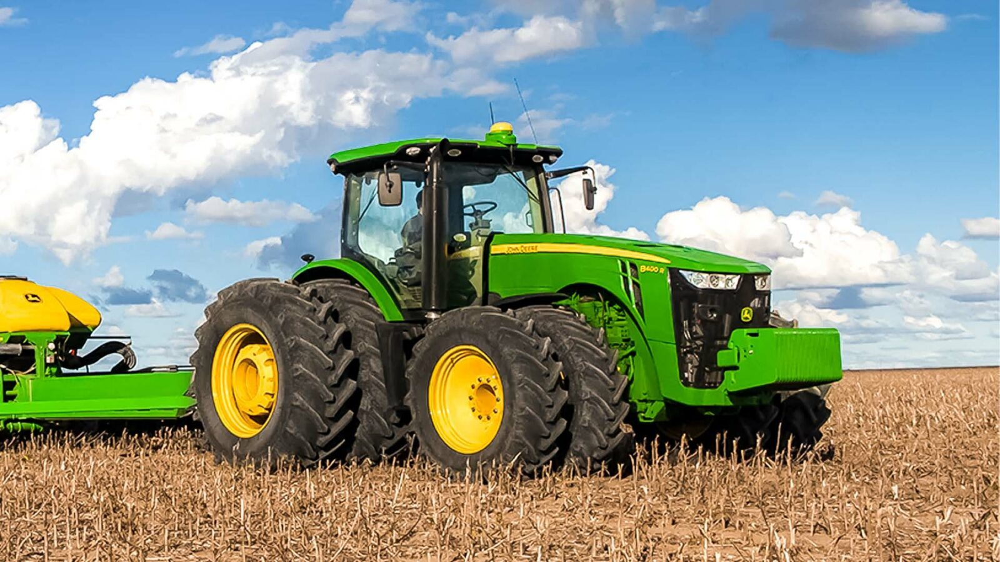

Tecnologia e Campo
A integração de novos sistemas de cultivo otimiza o uso do solo. Isso garante que áreas já desmatadas produzam o dobro, protegendo florestas nativas.
O agronegócio é responsável por grande parte do PIB brasileiro, impulsionando a economia e fortalecendo as exportações.

A integração de novos sistemas de cultivo otimiza o uso do solo. Isso garante que áreas já desmatadas produzam o dobro, protegendo florestas nativas.